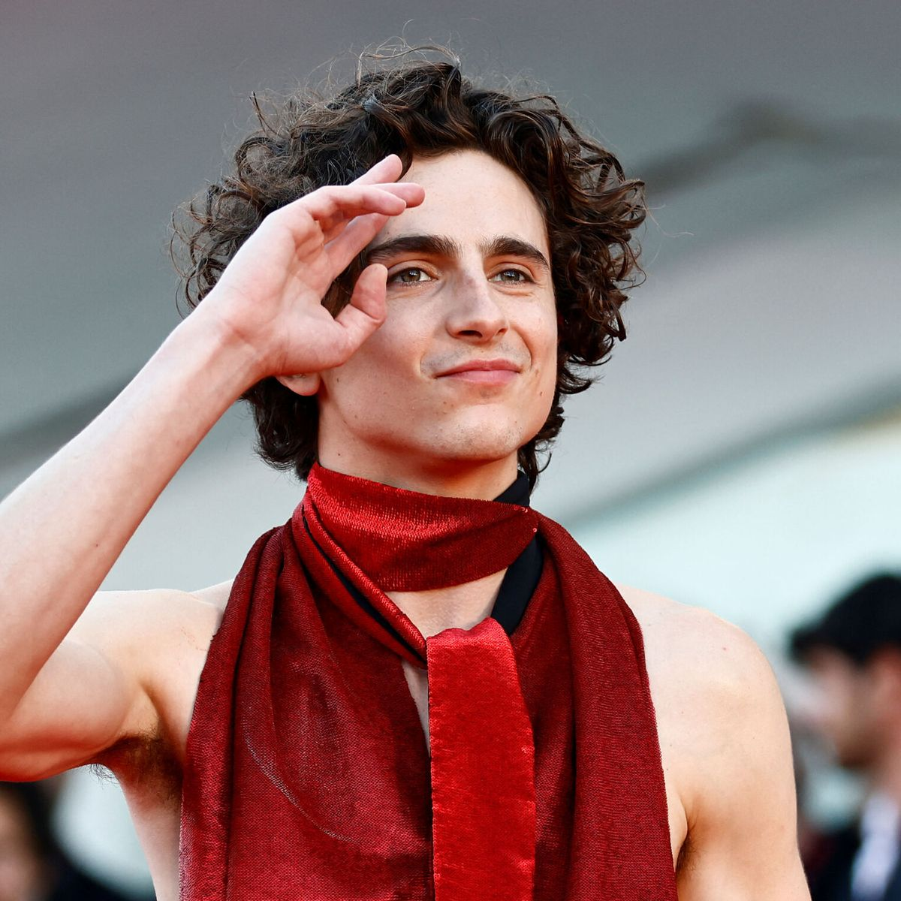

DUNE
Hasta el estreno de Dune (2021), Timothée Chalamet era más una estrella del cine independiente que de las grandes superproducciones. Sus rasgos físicos y sus interpretaciones emotivas le hacían más adecuado para los dramas tranquilos, y difícilmente encabezaba las listas de los directores de casting cuando se trataba de películas de acción. Pero todo cambió cuando fue elegido para interpretar a Paul Atreides en la última adaptación del clásico de ciencia ficción de Frank Herbert, Dune. En esta producción, Chalamet aporta cierta intensidad a un personaje que acaba de empezar su viaje, pero que llegará a hacer grandes cosas como vástago de la Casa Atreides y líder legendario del oprimido pueblo Fremen. Con el éxito de Dune, puso fin a cualquier duda sobre su estatus como estrella de Hollywood. Por su parte, el tráiler de Dune: Parte 2 ya se ha publicado y cuenta con fecha de estreno.

Derechos reservados por:
Montserrat Perez Nuño
Viviana Sahagun Vargas
Carolina Yazmin